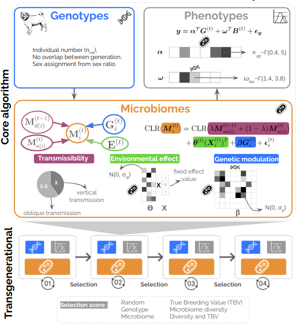

Our framework, R Implementation of a Transgenerational Hologenomic Model-based Simulator (RITHMS) is an open-source package, builds upon the MoBPS package and incorporates the distinctive architecture of the microbiota, notably vertical and horizontal transfer as well as modulation due to the environment and host genetics. In addition, RITHMS can account for a variety of selection strategies, is adaptable to different genetic architectures.
Full documentation website on: https://SolenePety.github.io/RITHMS
Last code version on: https://github.com/SolenePety/RITHMS
Here is a little summary of how RITHMS work, but you can read the preprint for more details.

Installation
You can install the development version of RITHMS from GitHub using devtools with:
# install.packages("devtools")
devtools::install_github("SolenePety/RITHMS")Toy dataset
You already have a toy dataset, a subset from Déru et al. 2020, there are 1845 species and 780 individuals, that show you the expected structure of input data :
library(RITHMS)
datafile <- system.file("DeruPop.rds", package = "RITHMS")
ToyData <- readRDS(datafile)To go further
If you’re interested into reproducing the figures of the article you can take a look at this vignette to generate the figures coming from the article